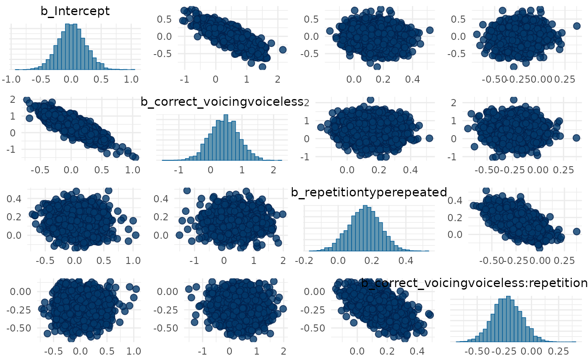
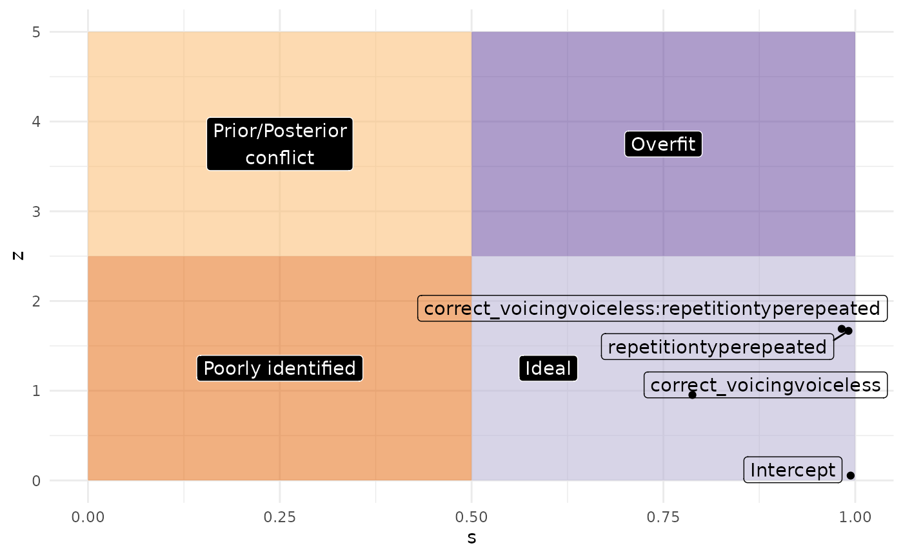
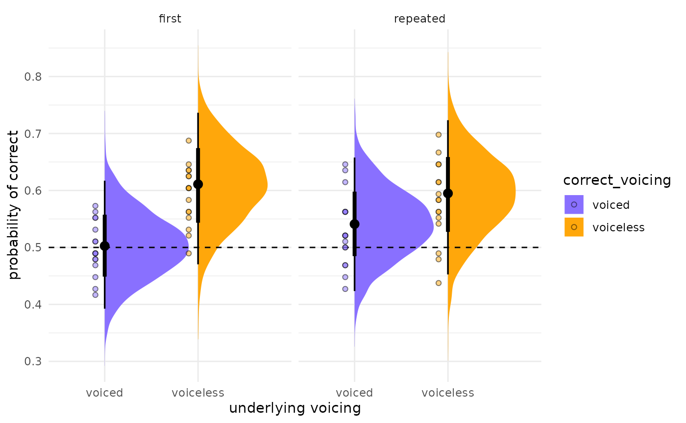

Fully worked-out analysis using a Bayesian regression with brms
Source:vignettes/full-analysis.Rmd
full-analysis.Rmd
library(tidyverse)
theme_set(theme_minimal())
library(ggrepel)
library(learnB4SS)
library(extraDistr)
library(HDInterval)
library(tidybayes)
library(bayesplot)
library(modelr)
library(broom.mixed)
library(brms)
data("incomplete")
# Set custom b4ss colours
b4ss_colors <- c(purple = "#8970FF", orange = "#FFA70B")
scale_fill_b4ss <- function(...) {
scale_fill_manual(..., values = c(b4ss_colors[[1]], b4ss_colors[[2]]))
}
scale_color_b4ss <- function(...) {
scale_color_manual(..., values = c(b4ss_colors[[1]], b4ss_colors[[2]]))
}Study overview and data
glimpse(incomplete)
#> Rows: 6,144
#> Columns: 8
#> $ order <dbl> 9, 10, 11, 12, 13, 14, 15, 16, 17, 18, 19, 20, 21, 22,…
#> $ speaker_voice <chr> "VP11", "VP10", "VP07", "VP15", "VP06", "VP09", "VP08"…
#> $ item_pair <dbl> 19, 11, 14, 23, 7, 15, 3, 13, 24, 2, 5, 20, 3, 8, 4, 9…
#> $ RT <dbl> 1531, 1009, 633, 1852, 3606, 4493, 15186, 1995, 940, 4…
#> $ correct <dbl> 1, 1, 1, 1, 0, 1, 0, 0, 0, 0, 0, 0, 1, 1, 0, 1, 1, 1, …
#> $ correct_voicing <chr> "voiceless", "voiceless", "voiced", "voiced", "voicele…
#> $ listener <chr> "L01", "L01", "L01", "L01", "L01", "L01", "L01", "L01"…
#> $ repetitiontype <chr> "first", "first", "first", "first", "first", "first", …Model formula
m1_bf <- brmsformula(
correct ~
correct_voicing *
repetitiontype +
# random slopes for interaction across listeners
(correct_voicing * repetitiontype | listener) +
# random slopes for interaction across speaker voices
(correct_voicing * repetitiontype | speaker_voice) +
# random slopes for interaction across minimal pairs
(correct_voicing * repetitiontype | item_pair),
family = bernoulli()
)Priors and prior predictive checks
Prior distribution of the outcome variable (likelihood, family)
\[correct_i \sim Bernoulli(p)\]
y <- dbern(c(0, 1), p = 0.75)
ggplot() +
aes(c("0", "1"), y) +
geom_linerange(aes(ymin = 0, ymax = y), size = 2, colour = b4ss_colors) +
geom_point(size = 5, colour = b4ss_colors) +
ylim(0, 1) +
labs(x = "outcome", y = "p")
#> Warning: Using `size` aesthetic for lines was deprecated in ggplot2 3.4.0.
#> ℹ Please use `linewidth` instead.
#> This warning is displayed once every 8 hours.
#> Call `lifecycle::last_lifecycle_warnings()` to see where this warning was
#> generated.
Get priors
# get_prior(m1_bf, data = incomplete)
get_prior(m1_bf, data = incomplete) %>%
as_tibble() %>%
select(prior:group)
#> # A tibble: 25 × 4
#> prior class coef group
#> <chr> <chr> <chr> <chr>
#> 1 "" b "" ""
#> 2 "" b "correct_voicingvoiceless" ""
#> 3 "" b "correct_voicingvoiceless:repetitiont… ""
#> 4 "" b "repetitiontyperepeated" ""
#> 5 "lkj(1)" cor "" ""
#> 6 "" cor "" "ite…
#> 7 "" cor "" "lis…
#> 8 "" cor "" "spe…
#> 9 "student_t(3, 0, 2.5)" Intercept "" ""
#> 10 "student_t(3, 0, 2.5)" sd "" ""
#> # ℹ 15 more rowsLog-odds space
dots <- tibble(
p = seq(0.1, 0.9, by = 0.1),
log_odds = qlogis(p)
)
tibble(
p = seq(0, 1, by = 0.001),
log_odds = qlogis(p)
) %>%
ggplot(aes(p, log_odds)) +
geom_hline(yintercept = 0, alpha = 0.5) +
geom_vline(xintercept = 0.5, linetype = "dashed") +
geom_line(size = 2, colour = b4ss_colors[2]) +
geom_point(data = dots, size = 4, colour = b4ss_colors[1]) +
scale_x_continuous(breaks = seq(0, 1, by = 0.1), minor_breaks = NULL) +
scale_y_continuous(breaks = seq(-6, 6, by = 2), minor_breaks = NULL) +
labs(
title = "Correspondence between probabilities and log-odds",
x = "probability",
y = "log-odds"
)
# log-odds = 0; get probability
glue::glue("Log-odds 0 = p(", plogis(0), ")")
#> Log-odds 0 = p(0.5)
# p = 0.5; get log-odds
glue::glue("p(0.5) = log-odds ", qlogis(0.5))
#> p(0.5) = log-odds 0
cat("\n\n")
# log-odds = 1.5; get probability
glue::glue("Log-odds 1.5 = p(", round(plogis(1.5), 4), ")")
#> Log-odds 1.5 = p(0.8176)
# p = 0.5; get log-odds
glue::glue("p(0.8176) = log-odds ", round(qlogis(0.8175745), 4))
#> p(0.8176) = log-odds 1.5Prior for the intercept
x <- seq(-15, 15, by = 0.1)
# 95% Cri [-6, +6] => SD = 6/2 = 3
y <- dnorm(x, mean = 0, sd = 3)
ggplot() +
aes(x, y) +
geom_line(size = 1.5, colour = b4ss_colors[1]) +
labs(x = "log-odds")
Prior for b
x <- seq(-4, 4, by = 0.1)
# 95% Cri [-2, +2] => SD = 2/2 = 1
y <- dnorm(x, mean = 0, sd = 1)
ggplot() +
aes(x, y) +
geom_line(size = 1.5, colour = b4ss_colors[1]) +
labs(x = "log-odds")
Prior for sd
inverseCDF(c(0.025, 0.975), phcauchy, sigma = 0.1)
#> [1] 0.003930135 2.545175934Prior predictive checks
m1_priorpc <- brm(
m1_bf,
data = incomplete,
prior = priors,
sample_prior = "only",
file = system.file("extdata/m1_priorpc.rds", package = "learnB4SS")
)
conditional_effects(m1_priorpc, effects = "correct_voicing:repetitiontype")
Let’s try VERY strong priors for comparison
priors_strong <- c(
prior(normal(2, 0.1), class = Intercept),
prior(normal(1, 0.1), class = b),
prior(cauchy(0, 0.1), class = sd),
prior(lkj(2), class = cor)
)
m1_priorpc_strong <- brm(
m1_bf,
data = incomplete,
prior = priors_strong,
sample_prior = "only",
cores = 4,
file = system.file("extdata/m1_priorpc_strong.rds", package = "learnB4SS")
)
conditional_effects(m1_priorpc_strong, effects = "correct_voicing:repetitiontype")Run model
m1_full <- brm(
m1_bf,
data = incomplete,
prior = priors,
cores = parallel::detectCores(),
chains = 4,
iter = 2000,
warmup = 1000,
file = system.file("extdata/m1_full.rds", package = "learnB4SS")
)Model output and interpretation
Checks and diagnostics
# Sample data from the generative model and compare with real data
pp_check(m1_full, nsamples = 200)
#> Warning: Argument 'nsamples' is deprecated. Please use argument 'ndraws'
#> instead.
# Generate trace and density plots for MCMC samples
# Only looking at pop-level parameters (no SDs or cor)
plot(m1_full, pars = "^b_")
#> Warning: Argument 'pars' is deprecated. Please use 'variable' instead.
# Pairs plots to help spot degeneracies (doesn't apply here but
# useful if you have divergent transitions)
pairs(m1_full, pars = "^b_")
#> Warning: Argument 'pars' is deprecated. Please use 'variable' instead.
# Check Rhat and ESS (remove the rest of the output so it doesn't distract)
summary(m1_full)$fixed[, 5:7]
#> Rhat Bulk_ESS Tail_ESS
#> Intercept 1.0049420 977.8247 1358.471
#> correct_voicingvoiceless 1.0045544 1226.8754 1982.232
#> repetitiontyperepeated 1.0013897 3884.5014 2915.458
#> correct_voicingvoiceless:repetitiontyperepeated 0.9999374 4262.5928 2502.050Prior sensitivity analysis
m1_fixed <- tidy(m1_full, effects = "fixed", conf.level = 0.95, fix.intercept = FALSE) %>%
mutate(
ci_width = abs(conf.low - conf.high)
)
#> Warning in tidy.brmsfit(m1_full, effects = "fixed", conf.level = 0.95,
#> fix.intercept = FALSE): some parameter names contain underscores: term naming
#> may be unreliable!
m1_fixed
#> # A tibble: 4 × 8
#> effect component term estimate std.error conf.low conf.high ci_width
#> <chr> <chr> <chr> <dbl> <dbl> <dbl> <dbl> <dbl>
#> 1 fixed cond Intercept 0.0125 0.231 -0.437 0.477 0.914
#> 2 fixed cond correct_voici… 0.439 0.461 -0.454 1.33 1.79
#> 3 fixed cond repetitiontyp… 0.156 0.0938 -0.0272 0.336 0.363
#> 4 fixed cond correct_voici… -0.224 0.133 -0.486 0.0319 0.518
m1_fixed %>%
mutate(
theta = c(0, 0, 0, 0),
sigma_prior = c(3, 1, 1, 1),
z = abs((estimate - theta) / std.error), # it's called here std.error but is the standard deviation
s = 1 - (std.error^2 / sigma_prior^2)
) %>%
ggplot(aes(s, z, label = term)) +
geom_point() +
geom_label_repel(arrow = arrow()) +
xlim(0, 1) + ylim(0, 5)
labels <- tibble(
x = c(0.25, 0.25, 0.6, 0.75),
y = c(1.25, 3.75, 1.25, 3.75),
labs = c("Poorly identified", "Prior/Posterior\nconflict", "Ideal", "Overfit")
)
m1_fixed %>%
mutate(
theta = c(0, 0, 0, 0),
sigma_prior = c(3, 1, 1, 1),
z = abs((estimate - theta) / std.error), # it's called here std.error but is the standard deviation
s = 1 - (std.error^2 / sigma_prior^2)
) %>%
ggplot(aes(s, z, label = term)) +
annotate("rect", xmin = 0, ymin = 0, xmax = 0.5, ymax = 2.5, alpha = 0.5, fill = "#e66101") +
annotate("rect", xmin = 0, ymin = 2.5, xmax = 0.5, ymax = 5, alpha = 0.5, fill = "#fdb863") +
annotate("rect", xmin = 0.5, ymin = 0, xmax = 1, ymax = 2.5, alpha = 0.5, fill = "#b2abd2") +
annotate("rect", xmin = 0.5, ymin = 2.5, xmax = 1, ymax = 5, alpha = 0.5, fill = "#5e3c99") +
geom_label(data = labels, aes(x, y, label = labs), colour = "white", fill = "black") +
geom_label_repel(fill = NA) +
geom_point() +
xlim(0, 1) + ylim(0, 5)
Visual effects
A quick and dirty way to assess the posterior predictions is using
the conditional_effects() function. It is also useful
because it plots the data into the original scale.
# quick and dirty plot on the original scale
plot(conditional_effects(m1_full), ask = FALSE)

We can also plot the posterior distributions of our population-level
coefficients. This can be conveniently done with the
bayesplot package.
posterior <- as.matrix(m1_full)
mcmc_areas(posterior,
pars = c("b_Intercept",
"b_correct_voicingvoiceless",
"b_repetitiontyperepeated",
"b_correct_voicingvoiceless:repetitiontyperepeated"),
# arbitrary threshold for shading probability mass
prob = 0.83) 
For more traditional plotting of the actual levels of the predictors,
we can use the data_grid() and
add_fitted_draws() functions. Here is an example.
post_data <- incomplete %>%
data_grid(correct_voicing, repetitiontype) %>%
add_fitted_draws(m1_full, n = 4000, re_formula = NA)
#> Warning: `fitted_draws` and `add_fitted_draws` are deprecated as their names were confusing.
#> - Use [add_]epred_draws() to get the expectation of the posterior predictive.
#> - Use [add_]linpred_draws() to get the distribution of the linear predictor.
#> - For example, you used [add_]fitted_draws(..., scale = "response"), which
#> means you most likely want [add_]epred_draws(...).
#> NOTE: When updating to the new functions, note that the `model` parameter is now
#> named `object` and the `n` parameter is now named `ndraws`.
post_plot <- post_data %>%
# plot
ggplot(aes(y = .value, x = correct_voicing,
fill = correct_voicing)) +
# density plus CrIs
stat_halfeye() +
# reference line at chance level = 0.5
geom_hline(yintercept = 0.5, lty = "dashed") +
# split by repetition type
facet_grid(~repetitiontype) +
# color code
scale_fill_manual(values = c("#8970FF", "#FFA70B")) +
#scale_color_manual(values = c("#8970FF", "#FFA70B")) +
# rename y axis
labs(y = "probability of correct",
x = "underlying voicing")
post_plot
If you want to add the actual aggregated accuracy for each listener to the plot (for example), you can add that information on top. Makes for a very informative plot.
#aggregate
incomplete_agg <- incomplete %>%
group_by(listener, correct_voicing, repetitiontype) %>%
summarise(.value = mean(as.numeric(correct)), .groups = "drop")
post_plot +
geom_point(data = incomplete_agg,
aes(y = .value,
x = correct_voicing,
fill = correct_voicing),
pch = 21, alpha = 0.5,
position = position_nudge(x = -0.1))
Inference
Interpreting model output
# Describe posterior using fixef (to get simple, clean output...
# focus on understanding each estimate in context and examining CrI's)
# Use in conjuction with levels_plot-2
fixef(m1_full)
#> Estimate Est.Error
#> Intercept 0.01248959 0.23130872
#> correct_voicingvoiceless 0.43899959 0.46065151
#> repetitiontyperepeated 0.15628813 0.09375277
#> correct_voicingvoiceless:repetitiontyperepeated -0.22414533 0.13267918
#> Q2.5 Q97.5
#> Intercept -0.43687340 0.47723123
#> correct_voicingvoiceless -0.45357875 1.33148511
#> repetitiontyperepeated -0.02722672 0.33584627
#> correct_voicingvoiceless:repetitiontyperepeated -0.48584540 0.03186847
# Focus on describing posterior
hdi_range <- bayestestR::hdi(m1_full, ci = c(0.65, 0.70, 0.80, 0.89, 0.95))
hdi_range
#> Highest Density Interval
#>
#> Parameter | 65% HDI | 70% HDI | 80% HDI | 89% HDI | 95% HDI
#> -----------------------------------------------------------------------------------------------------------------------------------
#> (Intercept) | [-0.21, 0.21] | [-0.25, 0.23] | [-0.27, 0.32] | [-0.36, 0.37] | [-0.46, 0.45]
#> correct_voicingvoiceless | [ 0.01, 0.87] | [-0.01, 0.93] | [-0.16, 1.02] | [-0.29, 1.16] | [-0.47, 1.31]
#> repetitiontyperepeated | [ 0.07, 0.25] | [ 0.07, 0.26] | [ 0.03, 0.27] | [ 0.00, 0.30] | [-0.03, 0.34]
#> correct_voicingvoiceless:repetitiontyperepeated | [-0.35, -0.11] | [-0.36, -0.09] | [-0.39, -0.05] | [-0.42, 0.00] | [-0.49, 0.03]
plot(hdi_range, show_intercept = T)